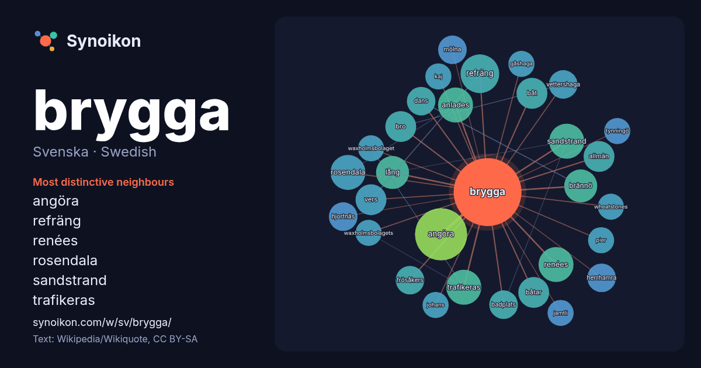

Svenska · Swedish · word of the day list
brygga
“jetty” · The words found around it in 549 instances from Swedish Wikipedia, Wikiquote.

Most distinctive neighbours
- angöra 21×
- refräng 12×
- renées 10.0×
- rosendala 10.0×
- sandstrand 10.0×
- trafikeras 9.7×
- anlades 9.3×
- brännö 9.0×
- vers 7.8×
- båt 7.7×
- båtar 7.7×
- bro 7.6×
- allmän 7.4×
- frösåkers 7.0×
- mölna 7.0×
- herrhamra 7.0×
- hjortnäs 7.0×
- vettershaga 7.0×
- badplats 6.9×
- dans 6.7×
× = how many times more often than in general Swedish Wikipedia text.
Most frequent neighbours
- angöra 20
- norra 12
- började 11
- refräng 11
- kommun 10
- stockholm 10
- anlades 9
- renées 9
- rosendala 9
- samt 9
- sandstrand 9
- trafikeras 9
- brännö 8
- lång 8
- allmän 7
- båt 7
- båtar 7
- bro 7
- norr 7
- södra 7
In context
- En brygga är ett däck som står på pelare vid en strand. Bryggan är en öppen konstruktion, till skillnad från en pir, som är massiv. En brygga som vilar Wikipedia snippets · Brygga
- För ledmotivet, se Att angöra en brygga (sång). Att angöra en brygga är en svensk komedifilm från 1965 i regi av Tage Danielsson. Den är en "Hasseåtage"-film Wikipedia snippets · Att angöra en brygga
- skapades på platsen. Namnet Brygge kommer sannolikt från det gammalnederländska ordet för bro eller brygga, brugga. Namnet Brygge dyker först upp i dokument Wikipedia snippets · Brygge
- är ett naturskönt rekreationsområde med återställda våtmarker. Önnereds brygga är namnet på hamnen, som tidigare var en aktiv fiskehamn. Nu finns det cirka Wikipedia snippets · Önnered
- öl sedan åtminstone år 1295 när kung Václav II gav 260 hushåll rätt att brygga öl till husbehov). Ortens namn har senare givit upphov till benämningen Wikipedia snippets · Pilsner Urquell
- en exakt mängd kaffe, oftast motsvarande en portion. Detta gör det möjligt att konsekvent brygga kaffe med rätt styrka och smak. Kafferosteriet Koppar Wikipedia snippets · Kaffemått
- Persborgs brygga är en ångbåtsbrygga med kallbadhus som byggdes i början av 1900-talet i anslutning till dåvarande Hotell Persborg vid Siljan i Sjurbergs Wikipedia snippets · Persborgs brygga
- om inget annat anges, när den publicerades. Huvudartikel: Wheatstones brygga Fyra motstånd kopplas över en galvanometer, där beräkningar utifrån de tre Wikipedia snippets · Mätbrygga
More Swedish words
Precomputed on 2026-10-09 with default settings (±5 words, medium corpus). The interactive map can refresh it with live data.